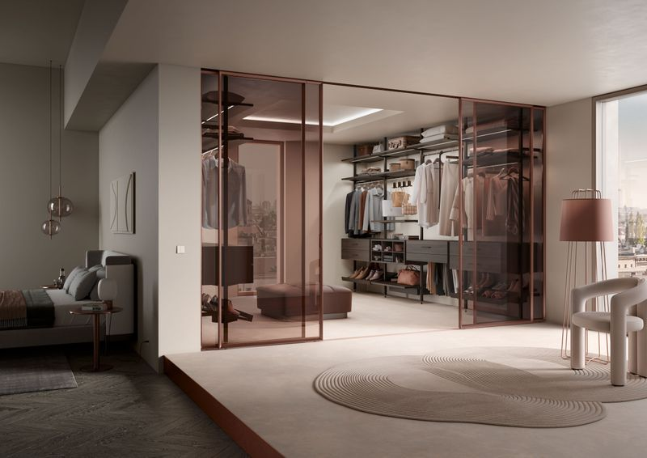

Wardrobe Engineering
Preventing Moisture Warp in Floor-to-Ceiling Closets
How backboard shadow gaps and BWP phenolic ply cores ensure sliding doors glide without binding through winter and summer.
Nov 02, 2026
Read Article